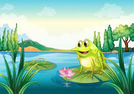
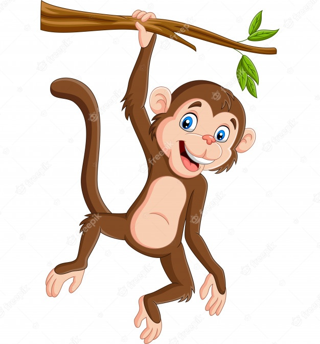
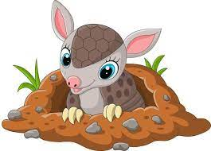
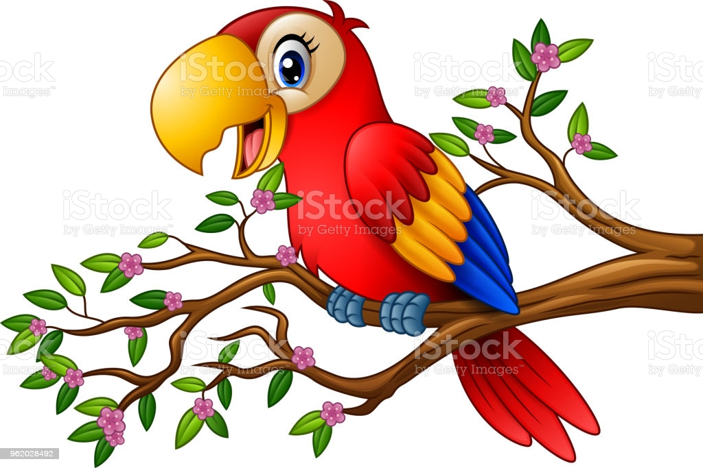
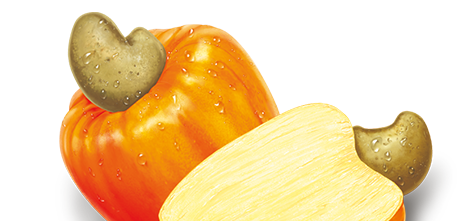
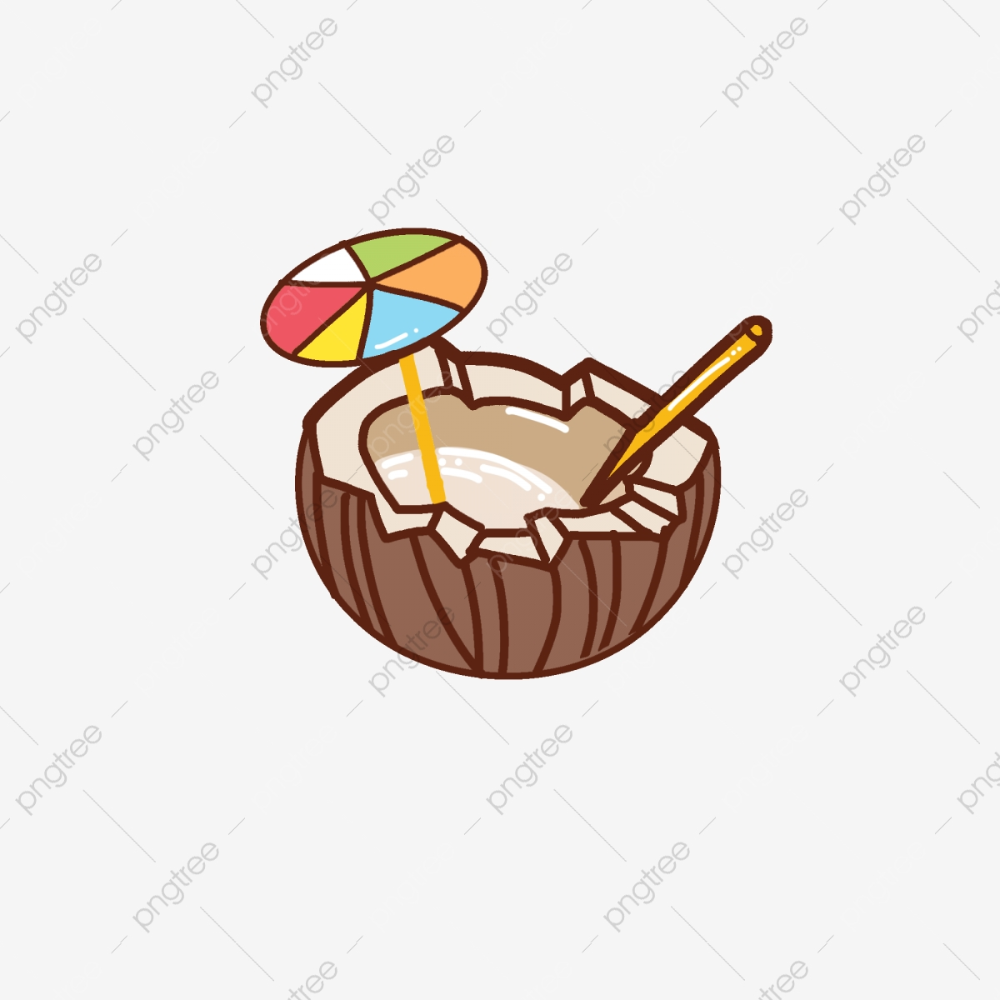

O Sapo do Rio e o Suco de Caju
Stênio V. MedeirosUm dia o sapo do rio ficou com muita vontade de tomar suco de caju, então ele pegou um pouco de agua e foi até o cajueiro.
Chegando ao cajueiro ele quis panhar alguns cajus, mas não conseguia subir na arvore. Então o macaco do cajueiro viu e perguntou:
_Sapo do Rio, que bom te ver, o que você está querendo?
_Macaco do cajueiro, eu quero fazer suco de caju, você pode panhar alguns para mim. Disse o sapo do rio.
_Claro que posso. Disse o macaco do cajueiro.
E então o macaco do cajueiro trouxe uma porção de cajus para o sapo do rio, mas ele disse:
_Agora precisamos também de um pouco de açúcar, acho que o Tatu da toca vermelha vai ter.
Então o sapo do rio e o macaco do cajueiro foram até a toca vermelha. Chegando lá eles chamaram:
_O tatu da toca vermelha, você está ai?
O tatu então saiu da toca e cumprimentou:
_Sapo do rio, Macaco do cajueiro, que bom ver vocês, em que posso ajudar?
_Estamos fazendo suco de caju, você pode nos dar um pouco de açúcar? Disse o sapo do rio.
_Claro que sim. Disse o tatu da toca vermelha, que entrou na toca e voltou trazendo um pouco de açúcar. _Mas agora precisamos de copos, acho que a Arará do Barranco deve ter alguns.
Então o Sapo do Rio, o Macaco do Cajueiro e o Tatu da Toca Vermelha foram até o barranco, chegando lá chamaram:
_Arara você está ai?
Então a Arara desceu o barrando voando e disse:
_Sapo do Rio, Macaco do Cajueiro, Tatu da toca Vermelha, que bom ver vocês, em que posso ajudar?
_Fizemos suco de caju e precisamos de copos para tomar, você tem copos. Disse o Sapo do Rio.
_Tenho sim, já vou buscar. Disse a Arara do Barranco que voou até seu ninho no alto do barranco e voltou com alguns copos feitos de cocos.
Então todos tomaram um delicioso suco de caju. Mas o que mais gostaram foi de compartilhar esse momento com os amigos.
 